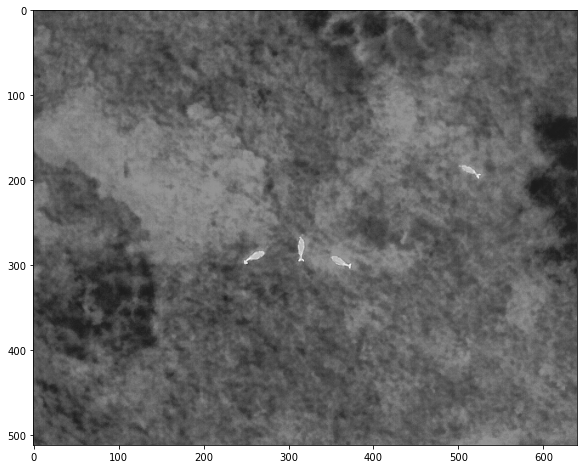
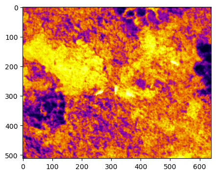
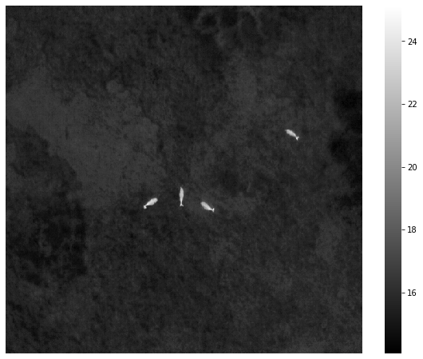
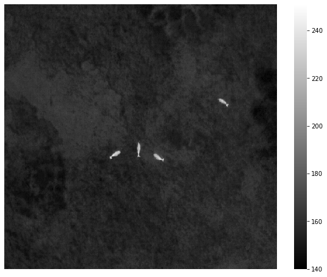

from dji_thermal_sdk.dji_sdk import *
from dji_thermal_sdk.utility import rjpeg_to_heatmap, rjpeg_to_thermal
import dji_thermal_sdk.dji_sdk as DJI
import dji_thermal_sdk.utility as util
import ctypes as CT
from ctypes import *
import os,sys
import matplotlib.pyplot as plt
import numpy as np
import seaborn as snsDJI Thermal SDK
use ctypes to capsulate the DJI Thermal SDK so that we can directly use python to process thermal images.
This version of DJI Thermal SDK is 1.4, which was published on 11/09/2022
Install
pip install dji_thermal_sdk
The package only can work on Windows System.
For Windows OS, DJI SDK DLLs include libdirp.dll, libv_dirp.dll, libv_girp.dll, libv_iirp.dll, libv_list.ini.
For Linux OS, DJI SDK DLLs include libdirp.so, libv_dirp.so, libv_girp.so, libv_iirp.so, libv_list.ini.
Firstly, you should invoke ‘dji_init’ to initialize DJI sdk environment. This step is very important
Initialize the DJI environment. This step is very important
if you don’t provide the file path of ‘libdirp.dll’, the default ‘libdirp.dll’ with version 1.3 will be automatically chosen.
root = os.path.dirname(DJI.__file__)
if sys.platform.startswith('linux'):
dllpath = os.path.join(root,'linux', 'libdirp.so')
osname = 'linux'
else:
dllpath = os.path.join(root,'windows', 'libdirp.dll')
osname = 'windows'
if os.path.isfile(dllpath):
print(f'current OS is {osname}, dllpath:{dllpath}')
else:
print("please download SDK from https://www.dji.com/downloads/softwares/dji-thermal-sdk")
#
dji_init(dllpath=dllpath, osname=osname)
DJI._libdirpcurrent OS is linux, dllpath:/home/hxl170008/code/git_repos/dji_thermal_sdk/dji_thermal_sdk/linux/libdirp.so<CDLL '/home/hxl170008/code/git_repos/dji_thermal_sdk/dji_thermal_sdk/linux/libdirp.so', handle 3f7c160 at 0x7facfbf1e6d0>Get the handle of a R-JPEG image
DIRP_HANDLE is a void pointer, and it has been definded.
you can get it by package.DIRP_HANDLE
rd = r"dataset\Deer_Goats_Unsure.jpg"
with open(rd, 'rb') as f:
content = f.read()
print(len(content))
# method1 to get the file size
print(f"File size: {os.path.getsize(rd)}")
# method 2 to get the file size
file_stat = os.stat(rd)
size = c_int32(file_stat.st_size)
print(f"File size: {size}")
# the method to create a string buffer, which is important.
rjpeg_data = CT.create_string_buffer(len(content))
rjpeg_data.value = content
print(f"rjpeg_data: {rjpeg_data}")
# test the function to create a handle of an image
ret = dirp_create_from_rjpeg(rjpeg_data,size, CT.byref(DIRP_HANDLE))
print(f'ret = {ret}')
if ret == 0:
print("successfully get the r-jpeg handle.")
#
print(f"DIRP_HANDLE: {DIRP_HANDLE} address: {hex(DIRP_HANDLE.value)} ")1367428
File size: 1367428
File size: c_long(1367428)
rjpeg_data: <ctypes.c_char_Array_1367428 object>
ret = 0
successfully get the r-jpeg handle.
DIRP_HANDLE: c_void_p(2201333297840) address: 0x20089b072b0 Get the version of API
jpeg_version = dirp_api_version_t()
ret = dirp_get_api_version(CT.byref(jpeg_version))
if ret == DIRP_SUCCESS:
print("Success")
#
print(f"jpeg_version.api: \t {jpeg_version.api}")
print(f"jpeg_version.magic: \t {jpeg_version.magic}")Success
jpeg_version.api: 19
jpeg_version.magic: b'b85e4d3'Get the version of DJI JPG
jpeg_version = dirp_rjpeg_version_t()
ret = dirp_get_api_version(CT.byref(jpeg_version))
if ret == DIRP_SUCCESS:
print("Success")
#
print(f"rjpeg:{jpeg_version.rjpeg}")
print(f"header:{jpeg_version.header}")
print(f"curve:{jpeg_version.curve}")Success
rjpeg:19
header:1697986658
curve:3367988Get Color Bar
nbdev.show_doc(dirp_color_bar_t)
class dirp_color_bar_t[source]
dirp_color_bar_t() ::Structure
Color bar parameters structure definition
jpeg_color_bar = dirp_color_bar_t()
ret = dirp_get_color_bar(DIRP_HANDLE, CT.byref(jpeg_color_bar))
if ret == DIRP_SUCCESS:
print("Success")
print(f"jpeg_color_bar.high: \t {jpeg_color_bar.high}")
print(f"jpeg_color_bar.low: \t {jpeg_color_bar.low}")
print(f"jpeg_color_bar.manual_enable: \t {jpeg_color_bar.manual_enable}")Success
jpeg_color_bar.high: -131073.015625
jpeg_color_bar.low: 9.10844001811131e-44
jpeg_color_bar.manual_enable: FalseGet the resolution of a R-JPEG image
rjpeg_resolution = dirp_resolution_t()
ret = dirp_get_rjpeg_resolution(DIRP_HANDLE, CT.byref(rjpeg_resolution))
print(f'ret = {ret}')
if ret == 0:
print("successfully get the resolution.")
out = f'Height: {rjpeg_resolution.height}, width: {rjpeg_resolution.width}'
outret = 0
successfully get the resolution.'Height: 512, width: 640'Set Pseudo Color
- DIRP_PSEUDO_COLOR_WHITEHOT = 0
- DIRP_PSEUDO_COLOR_FULGURITE = 1
- DIRP_PSEUDO_COLOR_IRONRED = 2
- DIRP_PSEUDO_COLOR_HOTIRON = 3
- DIRP_PSEUDO_COLOR_MEDICAL = 4
- DIRP_PSEUDO_COLOR_ARCTIC = 5
- DIRP_PSEUDO_COLOR_RAINBOW1 = 6
- DIRP_PSEUDO_COLOR_RAINBOW2 = 7
- DIRP_PSEUDO_COLOR_TINT = 8
- DIRP_PSEUDO_COLOR_BLACKHOT = 9
ret = dirp_set_pseudo_color(DIRP_HANDLE, c_int(0))
if ret == DIRP_SUCCESS:
print("Success")
else:
print(f"Error: ret={ret}")SuccessTransform a thermal image by a specific palette
size = rjpeg_resolution.height * rjpeg_resolution.width * 3 * CT.sizeof(c_uint8)
raw_image_buffer = CT.create_string_buffer(size)
print(raw_image_buffer.raw[100])
ret = dirp_process(DIRP_HANDLE,byref(raw_image_buffer), size)
if ret == DIRP_SUCCESS:
print("Success")
else:
print(f"Error: ret={ret}")
#
raw_file_path = os.path.splitext(rd)[0] + ".raw"
print(raw_file_path)
with open(raw_file_path, 'wb') as f:
f.write(raw_image_buffer.raw)
#
if os.path.exists(raw_file_path):
print(f"Success! file size: {os.path.getsize(raw_file_path)}")
else:
print("Error")
#
with open(raw_file_path, encoding='cp1252') as fin:
img = np.fromfile(fin, dtype = np.uint8)
print(img.shape)
img.shape = (512,640,3)
#original = Image.fromarray(img)
#
fig = plt.figure(figsize=(10,8))
plt.imshow(img, cmap='gray')rjpge_to_thermal
if DJI._libdirp == "":
print("run dji_init() to initialize the DJI sdk.")
src = r"dataset\Deer_Goats_Unsure.jpg"
img = rjpeg_to_thermal(src,0)
fig = plt.figure(figsize=(10,8))
plt.imshow(img)
plt.show()
img = rjpeg_to_thermal(src,2)
fig = plt.figure(figsize=(5,4))
plt.imshow(img)
plt.show()
rjpge_to_heatmap
if DJI._libdirp == "":
print("run dji_init() to initialize the DJI sdk.")
src = r"dataset\Deer_Goats_Unsure.jpg"
img = rjpeg_to_heatmap(src,dtype='float32')
fig = plt.figure(figsize=(10,8))
ax = sns.heatmap(img, cmap='gray')
ax.set_xticks([])
ax.set_yticks([])
plt.show()
if DJI._libdirp == "":
print("run dji_init() to initialize the DJI sdk.")
src = r"dataset\Deer_Goats_Unsure.jpg"
img = rjpeg_to_heatmap(src,dtype='int16')
fig = plt.figure(figsize=(10,8))
ax = sns.heatmap(img, cmap='gray')
ax.set_xticks([])
ax.set_yticks([])
plt.show()